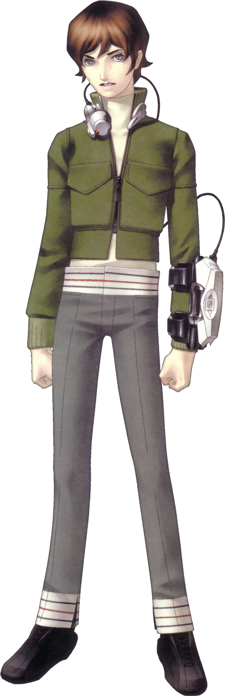
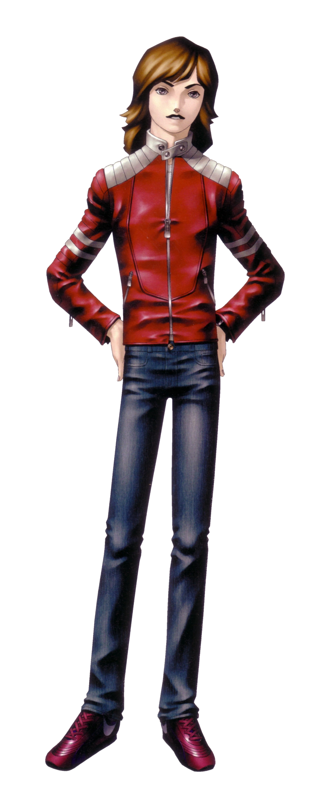
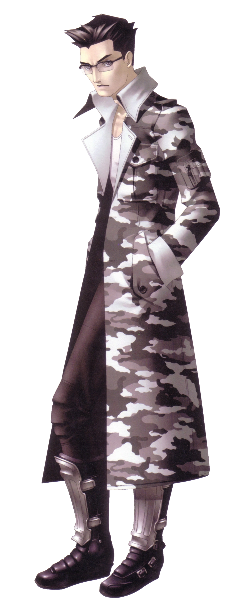
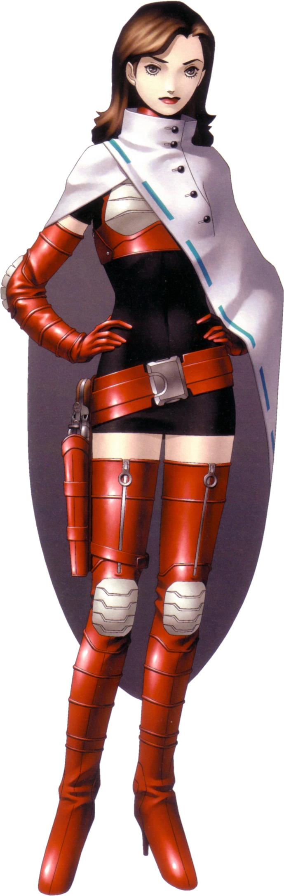

The figure on the right is the Protagonist from the video Game Series Shin Megami Tensei wearing his garb in the beginning of the game. Shin Megami Tensei is a Japanese Role Playing Game that was released for the Super Famicom (Japanese Super Nintendo)
on October 30, 1992. The gameplay was unique where instead of 4 party members, you can have a total of 6 party members; 2-3 being the Hero/Protagonist, Heroine, and one of the two alignment heroes with the rest being filled with dmon companions you obtain throughout the game. Speaking of alignments, this game uses an alignment system where depending on your actions can lead you down one of the three factions(alignments); Gaian(Chaos), Mesian(Law), or pure Neutral. Demons in this game are the party members that will help you on your journey. the demons are from multiple sources of mythology be it Judeo-Christian, European, Buddhist, Hindu, Japanese, Scandinavian, Chinese, or from the list of 72 demons from the Ars Goetia.
The game starts with the protagonist waking up from a strange dream where he meets 3 characters, the Law Hero, the Chaos Hero, and the Heroine. When he is woken up by his mother, he heads to the nearby mall in order to grab some coffee for his mother since it is his day off from...something. When he arrives at the mall, he finds a person acting strange. it turns out the strange person has a knife and is then attacked and immediately killed by a demon who then attacks him. He foolishly picks up the knife and then heads him with what he needed. He goes back to bed and has another strange dream where he meets and teams up with the Law and Chaos Heroes and travel down a corridor into a cave with a lake and a woman named yuriko bathing in the lake telling the protagonist that she is his. The next day, he wakes up to find that the city of Tokyo is under martial law due to a coup cause by a military general, and the city is suffering an outbreak of not only demons but also zombies. After finding and helping the resistance led by the heroine, the protagonist, Law hero, chaos hero, and Heroine head to the United States of America Embassy to talk to the ambassador, Ambassador Thorman, about what is going on. After a conversation they find out that the abassador is actually the Norse god, Thor, and they start to battle. After the battle, Thor lets them know that during the battle he has given the command needed for the United States to launch Inter-Continental Ballistic Nuclear Missile at Japan in order to stop the demon invasion. the party futily try to run out of the embassy to find a safe place to hide but the Heroine decides to sacrfice herself to save the three by teleporting them away before being engulfed by the nuclear blast. The three heroes are transported to a place called the Diamond Realm, where they are forced to do special tests and errands for the the leaders of the realm before they can go back to Tokyo. Once they do come back to Tokyo, they find that they have been gone for 30 years and that is when the protagonist hits the alignment crossroads; the protagonist (and by extension YOU the player) can pick what alignment to go under. Help out the Mesians and bring safety and Law under God at the cost of Free will? Help out the Gaians and bring Chaos, where the weak are fodder for the strong, and the strong thrive? Or be Neutral and bring balance back to the world?
Law Hero
Chaos Hero
Heroine



How this page is made:
This page is made using the following topics we learned in Class; Padding, Floating, multi-column divisions, and position.